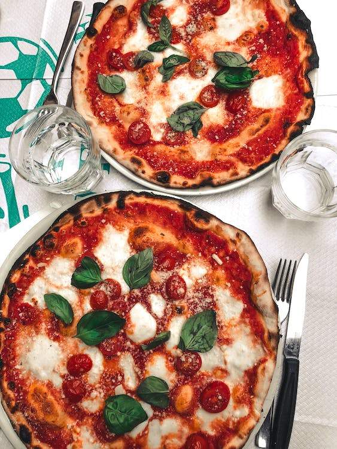

Pasos para hacer una pizza
- Definir el sabor de la pizza
- Definir los ingredientes
- Definir las herramientas
- Horno
- Refrectaria
- Molinillo
- Cortador de pizza
- Cuchillos
- Paso a paso para hacer la pizza
-
Prepara la masa mezclando la harina, la sal y la levadura seca en un
tazón grande. Añade el agua tibia y el aceite de oliva y amasa hasta
obtener una masa suave y elástica.
-
Deja reposar la masa durante al menos 1 hora en un lugar cálido y
cubierta con un paño húmedo.
- Precalienta el horno a 220°C.
- Prepara la salsa mezclando el tomate triturado con el ajo, el orégano, la sal y la pimienta.
- Estira la masa con un rodillo o con las manos para darle forma circular y colócala sobre una bandeja de horno.
- Cubre la masa con la salsa de tomate y coloca encima la mozzarella de búfala y las aceitunas negras. Si deseas, puedes añadir también anchoas.
- Hornea la pizza durante unos 10-15 minutos, o hasta que la masa esté dorada y la mozzarella se haya derretido.
- Decora con hojas de albahaca fresca antes de servir.
- ¡Listo! Ya tienes tu deliciosa pizza napolitana casera. ¡Que aproveche!
- Resultado final
